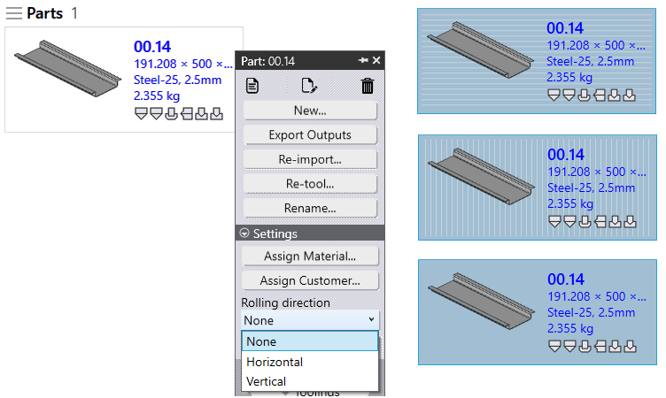

Rolling Direction
-
Right-click any Part and Click the drop down option in ui:Str.Rolling[Rolling direction].
-
Set None OR Horizontal OR Vertical.
-
Part will get retooled against cut machines and part tile will show respective Rolling direction.
-
